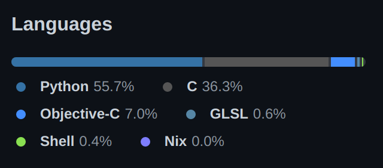
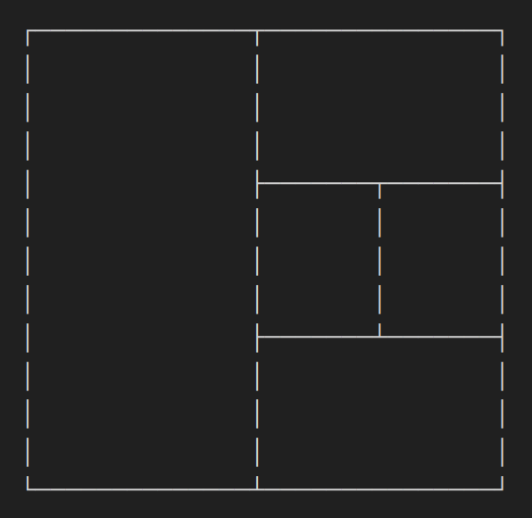

Kittyとは?
GPUベースのターミナルです。Python/Cで作られています。
Kitty - the fast, feature-rich, cross-platform, GPU based terminal https://github.com/kovidgoyal/kitty
インストール方法
公式ドキュメント ↓
Install kitty | kitty
https://sw.kovidgoyal.net/kitty/binary/
Linuxの場合は以下のコマンドでインストール可能です。
# Create a symbolic link to add kitty to PATH (assuming ~/.local/bin is in your PATH)
ln -s ~/.local/kitty.app/bin/kitty ~/.local/bin/
# Place the kitty.desktop file somewhere it can be found by the OS
cp ~/.local/kitty.app/share/applications/kitty.desktop ~/.local/share/applications/
# Update the path to the kitty icon in the kitty.desktop file
sed -i "s|Icon=kitty|Icon=/home/$USER/.local/kitty.app/share/icons/hicolor/256x256/apps/kitty.png|g" ~/.local/share/applications/kitty.desktop
設定
kitty.conf を編集して設定を行います。編集後に新しい設定を適用するためには、アプリを再起動する必要があります。(私の環境だけかもしれません)
カスタマイズガイド↓
kitty.conf | kitty
https://sw.kovidgoyal.net/kitty/conf/
今回は、私が利用しているいくつかの設定を紹介します。
カラーテーマ
Icebergを使っています。GitHub Gist で公開されていたのでそれをコピペしました。
background #161821
foreground #c6c8d1
selection_background #1e2132
selection_foreground #c6c8d1
cursor #d2d4de
# black
color0 #161821
color8 #6b7089
# red
color1 #e27878
color9 #e98989
# green
color2 #b4be82
color10 #c0ca8e
# yellow/orange
color3 #e2a478
color11 #e9b189
# blue
color4 #84a0c6
color12 #91acd1
# magenta/purple
color5 #a093c7
color13 #ada0d3
# cyan
color6 #89b8c2
color14 #95c4ce
# white
color7 #c6c8d1
color15 #d2d4de
# tab bar
active_tab_foreground #161821
active_tab_background #84a0c6
inactive_tab_foreground #d2d4de
inactive_tab_background #353a50
tab_bar_background #0f1117
画面分割
Kittyには、tmuxのような異なるレイアウトにターミナルを分割して表示する機能があります。分割方法の種類にも色々とあり、私は “The Splits Layout” というものを使っています。とても便利です。
enabled_layouts splits
map F5 launch --location=hsplit #下方向にウィンドウを分割
map F6 launch --location=vsplit #右方向にウィンドウを分割
map F7 layout_action rotate #既存のウィンドウの向きを変更
map ctrl+shift+left resize_window narrower #ウィンドウサイズを左方向に拡大
map ctrl+shift+right resize_window wider #ウィンドウサイズを右方向に拡大
map ctrl+shift+up resize_window taller #ウィンドウサイズを上方向に拡大
map ctrl+shift+down resize_window shorter #ウィンドウサイズを下方向に拡大
タブの見た目
タブの横幅がインタラクティブに変化することを避けるためのコードです。見た目がスッキリします。
tab_bar_edge top
tab_bar_style powerline
tab_powerline_style angled
tab_title_template " {index}: {'{: <501}'.format(title)}"
参考: GPUベースのターミナルKittyをmacOS用に使いやすく設定する
Kittyの問題点
Linuxでの日本語入力が不安定
私の環境によるものかもしれませんが、fcitxやibusによる日本語入力をする際の挙動が不安定です。具体的には、こんにちは。 と入力すると。は こんに と変換されるような不具合が頻発します。これらはibus/fcitx5の両方で発生しています。
参考までに、各ソフトウェアのバージョンを記載しておきます。
OS: Ubuntu 21.10
Kitty: 0.23.1
Fcitx: 4.2.9.8
IBus 1.5.25
最後に
日本語入力問題さえ解決すれば、非常に使いやすいターミナルだと思います。